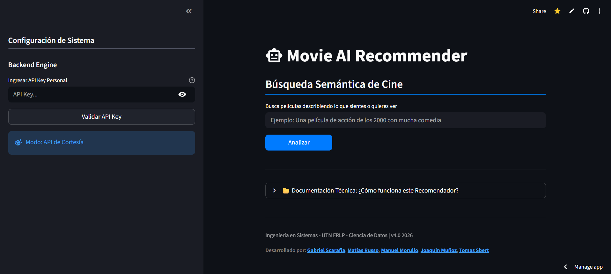
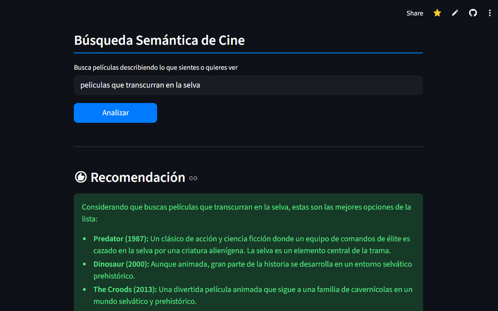

Sistema de recomendación inteligente basado en búsqueda semántica y arquitectura RAG
Nombre del proyecto: Recomendador de Películas
Descripción: Sistema de recomendación que utiliza búsqueda semántica vectorial para encontrar películas similares y genera explicaciones personalizadas mediante LLMs.
Tipo: Proyecto de Ciencia de Datos / IA (RAG Pipeline)
Rol: Data Engineer / ML Developer
Fecha: Junio - Julio 2025
Tecnologías Usadas: Python, FAISS, SentenceTransformer, Google Gemini API, Streamlit
Colaboradores: Gabriel Scarafia, Matias Russo, Joaquin Muñoz, Tomas Sbert
Probar Herramienta Ver CódigoLas plataformas tradicionales de recomendación suelen basarse en filtros de género o palabras clave exactas, lo que limita la capacidad de descubrir contenido basándose en conceptos abstractos o tramas complejas. El desafío fue construir un motor de búsqueda que "entendiera" el contexto de la sinopsis.
El objetivo fue implementar un pipeline de Generación Aumentada por Recuperación (RAG) que no solo encontrara las películas adecuadas, sino que fuera capaz de razonar y explicar al usuario por qué esas opciones encajan con sus gustos particulares.
El proceso comenzó con un dataset masivo en CSV que contenía títulos, años, géneros y sinopsis. Aplicamos una etapa de normalización de texto y creamos una "Sopa de Metadatos" combinando género, sinopsis y director para enriquecer el contexto semántico.
Para la búsqueda semántica, transformamos las descripciones en vectores de 384 dimensiones utilizando el modelo SentenceTransformer. Estos vectores fueron indexados en FAISS (Facebook AI Similarity Search), permitiendo comparaciones de similitud coseno en milisegundos sobre miles de registros.
La arquitectura final une la recuperación eficiente de datos con la IA Generativa:
Supera la limitación de palabras clave exactas, permitiendo buscar por conceptos como "ciencia ficción distópica con giros de trama".
Utiliza librerías optimizadas para realizar búsquedas en espacios vectoriales de alta dimensión en tiempo real.
No solo entrega una lista; gracias a Gemini, el sistema redacta una justificación de por qué cada película es relevante para el usuario.
Creación de 'Sopa de Metadatos' para optimizar la tokenización y dar mayor peso semántico a directores y géneros.

